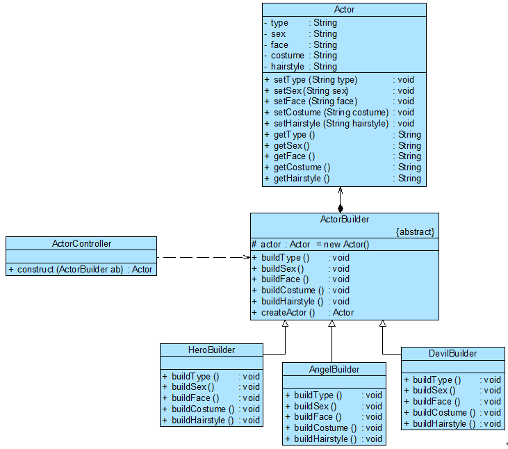

建造者模式，又称为生成器模式，为客户端返回一个由多个部件组成的复杂产品。
1. 建造者模式概述#
小例子，设计游戏角色病可以快速生成。对于各种角色来说，创建步骤相对比较类似，逐步创建其组成部分，再将各组成部分装配成一个完整的游戏角色。
建造者模式将客户端和包含各个组成部分的复杂对象的创建过程分离，客户端无须知道复杂对象的内部组成部分与装配方式，只需要知道所需建造者的类型即可。
建造者模式，将一个复杂对象的构建与它的表示分离，使得同样的构建过程可以创建不同的表示。建造者模式是一种对象创建型模式。
1.1 建造者模式结构#

建造者模式结构图
1.2 建造者模式角色#
- Builder(抽象建造者)
为创建一个产品Product对象的各个部件指定抽象接口，包含两类方法。一是buildPart()， 二是getResult()方法
- ConcreteBuilder(具体建造者)
实现了Builder接口，实现各个部件的具体构造和装配方法，定义并明确其所创建的复杂对象。
- Product(产品角色)
是被构建的复杂对象，包含多个组成部件，具体建造者创建该产品，并定义其装配过程
- Director(指挥者)
指挥者又称为导演类，它负责安排复杂对象的建造次序，指挥者与抽象建造者之间存在关联关系，可以在其construct()建造方法中调用建造者对象的部件构造与装配方法，完成复杂对象的建造。客户端一般只需要与指挥者进行交互，在客户端确定具体建造者的类型，并实例化具体建造者对象（也可以通过配置文件和反射机制），然后通过指挥者类的构造函数或者Setter方法将该对象传入指挥者类中。
在建造者模式的结构中还引入了一个指挥者类Director，该类主要有两个作用：一方面它隔离了客户与创建过程；另一方面它控制产品的创建过程，包括某个buildPartX()方法是否被调用以及多个buildPartX()方法调用的先后次序等。指挥者针对抽象建造者编程，客户端只需要知道具体建造者的类型，即可通过指挥者类调用建造者的相关方法，返回一个完整的产品对象。
2. 游戏角色创建解决方案#

角色创建结构图
Actor角色类
// import lombok
@Data
class Actor{
private String type;
private String sex;
private String face;
private String costume;
private String hairstyle;
}
角色建造起：抽象建造者
abstract class ActorBuilder {
public void buildType() {
actor.setType("Charm");
}
}
指挥者类
class ActorController {
public Actor construct(ActorBuilder ab) {
Actor actor;
ab.buildType();
ab.buildSex();
…
actor = ab.createActor();
return actor;
}
}
3. 关于Director的讨论#
3.1 省略Director#
将Director和抽象建造者Builder进行合并，在Builder中提供逐步构建复杂产品对象的construct()方法，控制调用的先后次序。
abstract class ActorBuilder
{
protected static Actor actor = new Actor();
public abstract void buildType();
public abstract void buildSex();
public abstract void buildFace();
public abstract void buildCostume();
public abstract void buildHairstyle();
public static Actor construct(ActorBuilder ab)
{
ab.buildType();
ab.buildSex();
ab.buildFace();
ab.buildCostume();
ab.buildHairstyle();
return actor;
}
}
3.2 设值钩子方法#
来控制对BuilderPart的调用
4. 总结#
4.1 优点#
- 产品本身与创建过程解耦
- 具体建造者之间相对独立
4.2 缺点#
- 同一个Builder建的很类似啊，需要产品本身相似程度比较高，否则会很受限